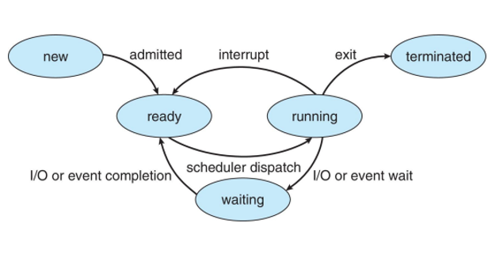

Concetto di Processo fondamento
Un programma è passivo in ed è salvato in disco.
Un processo è un programma in esecuzione.
Non è semplicemente il file binario su disco: include
Struttura del Computer System
L'architettura è composta in questo modo:
- User
- Application programs
Definisce come le risorse del computer devono essere usate per risolvere un problema dell’utente: video games, web browsers. - Operating systems
Controlla e coordina l’uso di hardware tra le varie applicazioni e utenti. - Hardware
Prevede i componenti del computer come dispositivi I/O e CPU, memoria.

Due esecuzioni distinte dello stesso programma danno luogo a due processi separati, ognuno con il proprio spazio di indirizzamento virtuale, i propri file aperti e il proprio stato di esecuzione. Il SO garantisce che i processi siano isolati tra loro: uno non può leggere o scrivere la memoria di un altro senza meccanismi IPC espliciti.
Process Control Block (PCB)
Il kernel rappresenta ogni processo con le sue informazioni tramite una struttura dati chiamata Process Control Block.
In Linux questa struttura si chiama task_struct e contiene:
identificatore del processo (PID), stato corrente, valore del program counter, valori dei registri CPU, informazioni di scheduling (priorità, tempo
CPU consumato), informazioni sulla memoria virtuale (page table), lista dei file aperti e informazioni di
sicurezza (UID, GID, capabilities).
Quando il SO deve sospendere un processo, salva tutti i suoi registri nel PCB. Quando lo riprende, li ripristina. Questo meccanismo permette l'illusione della concorrenza anche su un singolo core.
Stati del Processo
Durante la sua vita, un processo attraversa cinque stati principali:
- New: il processo è stato creato ma non ancora ammesso allo scheduling.
- Ready: il processo è pronto per essere eseguito, aspetta la CPU.
- Running: la CPU sta eseguendo le sue istruzioni.
- Waiting: il processo è bloccato in attesa di un evento (I/O completato, segnale, timer).
- Terminated: il processo ha concluso la sua esecuzione.

Le transizioni sono gestite dallo scheduler (Ready → Running, Running → Ready per preemption) e dagli eventi di I/O (Running → Waiting, Waiting → Ready quando l'evento si verifica).
Context Switch
Quando la CPU deve passare dall'esecuzione di un processo a un altro, il SO esegue un context switch. L'operazione si svolge in due fasi: prima il kernel salva l'intero stato del processo corrente nel suo PCB (registri, program counter, stack pointer), poi carica lo stato del processo successivo dal suo PCB.
Il context switch è overhead puro: durante la commutazione la CPU non esegue lavoro utile per nessuna applicazione. Il tempo necessario dipende dall'hardware (tipicamente 1-10 µs) e dalla frequenza con cui lo scheduler decide di cambiare processo. Un quantum di tempo troppo breve porta a troppe commutazioni; uno troppo lungo riduce la reattività del sistema.
Creazione dei Processi
In Unix/Linux, i processi si creano con la syscall fork(). Questa crea una copia
esatta del processo chiamante (il figlio è identico al padre): stesso codice, stessi dati,
stessi file aperti. I due processi si distinguono per il valore di ritorno di fork(): nel padre vale il PID del figlio, nel figlio vale 0.
Tipicamente il figlio chiama subito exec() per sostituire la propria immagine con
un nuovo programma. Il padre usa wait() per aspettare la terminazione del figlio e
raccogliere il suo valore di uscita. Questo schema fork-exec-wait è il meccanismo con cui la shell
avvia ogni comando.
La fork() usa il Copy-on-Write: le pagine di memoria
vengono realmente duplicate solo quando uno dei due processi le modifica. Se il figlio chiama subito exec(), la copia non avviene quasi mai, rendendo la fork molto efficiente.
Albero dei Processi in Linux fondamentale
Ogni processo Linux (tranne il primo) ha un processo padre. Si forma così una gerarchia ad albero. Il processo
radice è systemd (o init nei sistemi più vecchi) con PID
1, avviato direttamente dal kernel al boot. Tutti gli altri processi ne sono discendenti diretti o indiretti.
L'albero è ispezionabile con pstree o ps auxf. Il
comando kill invia segnali ai processi per comunicare con loro o per terminarli. Se
un padre termina prima del figlio, il figlio viene "adottato" da systemd
(reparenting).
Terminazione del Processo fondamentale
- Un processo termina in modo normale chiamando
exit(status), che libera le risorse e notifica il padre. Il valorestatus(intero, tipicamente 0 per successo, non-zero per errore) è recuperabile dal padre tramitewait(). - Un processo può essere terminato in modo forzato da un segnale:
SIGKILL(non catturabile) termina immediatamente,SIGTERMchiede gentilmente al processo di terminare (catturabile),SIGSEGVviene inviato dal kernel quando il processo accede a memoria non sua. - Un processo terminato ma il cui padre non ha ancora chiamato
wait()rimane nella tabella dei processi come zombie. Occupa una entry nella process table ma non consuma CPU né memoria. Se un processo produce molti zombie senza raccoglierli, può esaurire gli slot della process table.
IPC (InterProcess Communication) — Shared Memory
La memoria condivisa è il meccanismo IPC più veloce: due o più processi mappano la stessa regione di memoria fisica nel proprio spazio virtuale. Una scrittura da parte di un processo è immediatamente visibile all'altro, senza alcuna copia nel kernel.
In POSIX si usa shm_open() + mmap(); in System V si
usano shmget()/shmat(). Lo svantaggio è che la
sincronizzazione tra i processi è interamente a carico del programmatore: senza mutex o semafori, si rischiano
race condition gravi.
IPC — Message Passing
Nel message passing i processi si scambiano messaggi tramite due primitive: send(message) e receive(message). Il kernel funge da
intermediario: copia il messaggio dal buffer del mittente a quello del ricevente.
È più sicuro della shared memory (nessuna memoria condivisa che possa corrompersi) e più facile da usare correttamente, ma introduce overhead per ogni copia del messaggio. È il meccanismo preferito per la comunicazione tra processi non correlati e su sistemi distribuiti.
Implementazione del Communication Link
Il canale di comunicazione tra processi può essere diretto (i processi si nominano
esplicitamente: send(P2, msg)) o indiretto tramite una
mailbox/porta: send(mailboxA, msg), e qualunque processo con accesso a quella
mailbox può ricevere.
Il link può essere unidirezionale (pipe) o bidirezionale (socket). Può essere sincrono (bloccante: mittente aspetta che il ricevente sia pronto) o asincrono (non bloccante: mittente continua subito). La combinazione più comune nella pratica è send asincrono + receive sincrono.
Buffering dei Messaggi
I messaggi in transito vengono accodati in un buffer. Ci sono tre modalità: capacità zero (rendez-vous): mittente e ricevente devono sincronizzarsi esattamente, nessun messaggio in coda. Capacità limitata: la coda può contenere al massimo N messaggi; il mittente si blocca quando è piena. Capacità illimitata: il mittente non si blocca mai (ma la memoria potrebbe esaurirsi).
Pipes
La pipe è il meccanismo IPC più semplice di Unix: un canale unidirezionale con un'estremità di scrittura e una di lettura. Implementa un buffer FIFO nel kernel. Le pipe ordinarie funzionano solo tra processi correlati (padre-figlio); le named pipe (FIFO) sono accessibili tramite un file nel filesystem e collegano processi non correlati.
Le pipe sono usatissime nelle shell: ls -la | grep txt | sort crea una catena di
processi collegati da pipe. L'output di ogni comando diventa l'input del successivo senza mai scrivere su disco.
Thread — Anteprima cap. 03
I thread sono unità di esecuzione più leggere dei processi, contenute all'interno di un processo. Condividono codice, dati e file aperti del processo padre, ma hanno ognuno il proprio stack, il proprio program counter e i propri registri. Creare e fare il context switch tra thread è molto più economico che tra processi. Approfondimento completo nel capitolo 03.